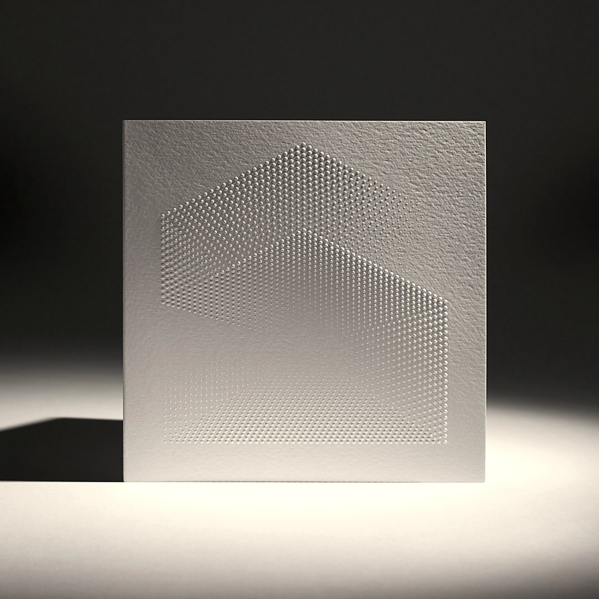
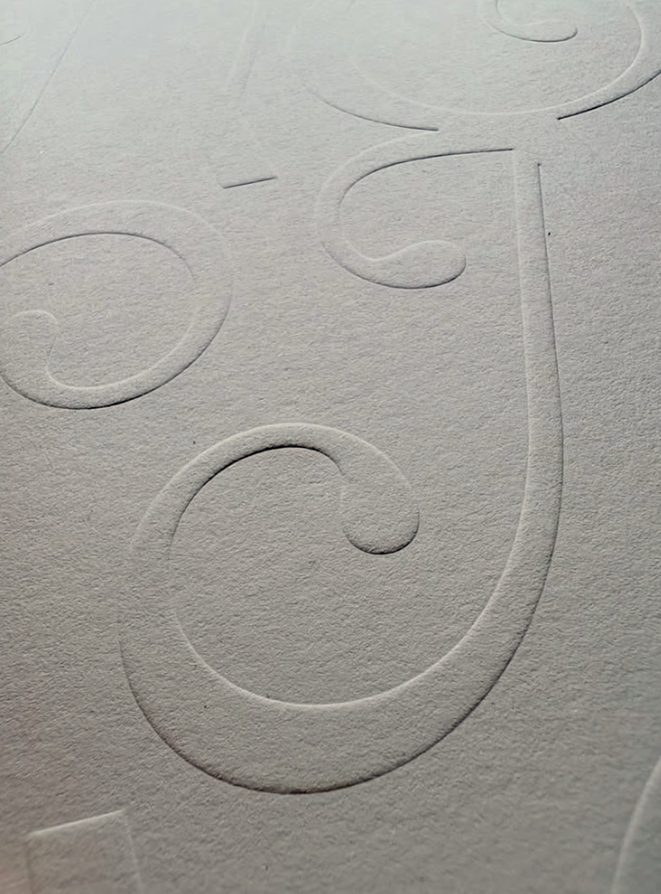
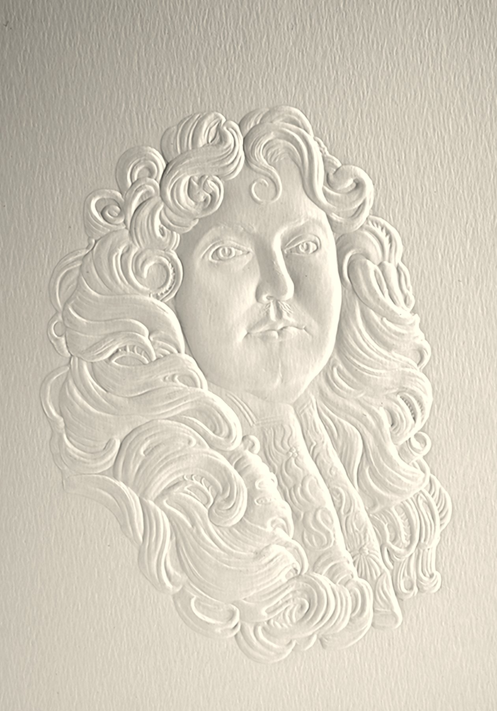
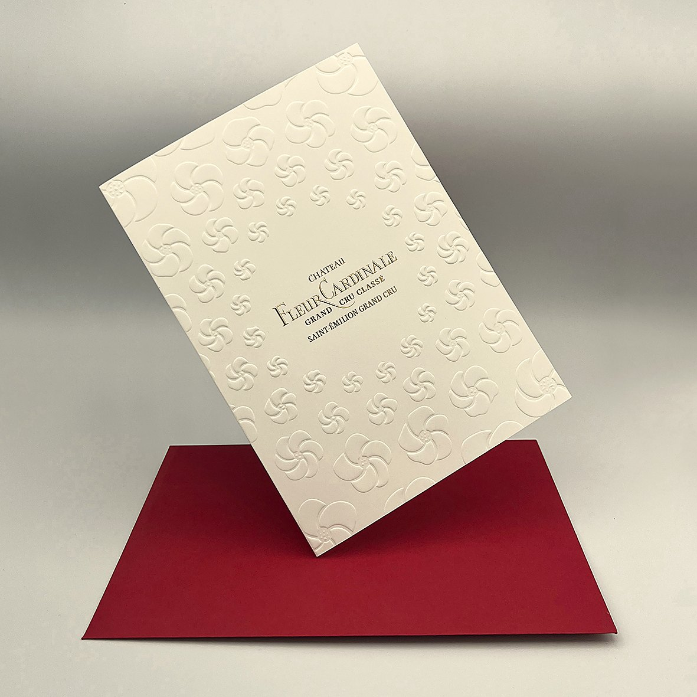
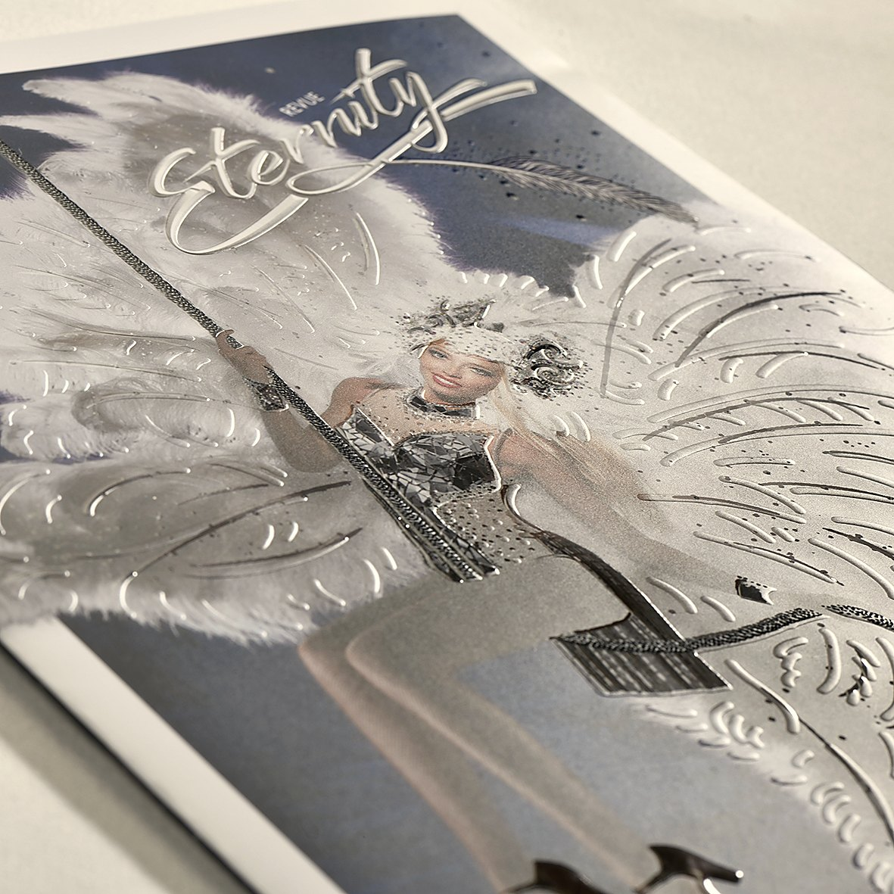
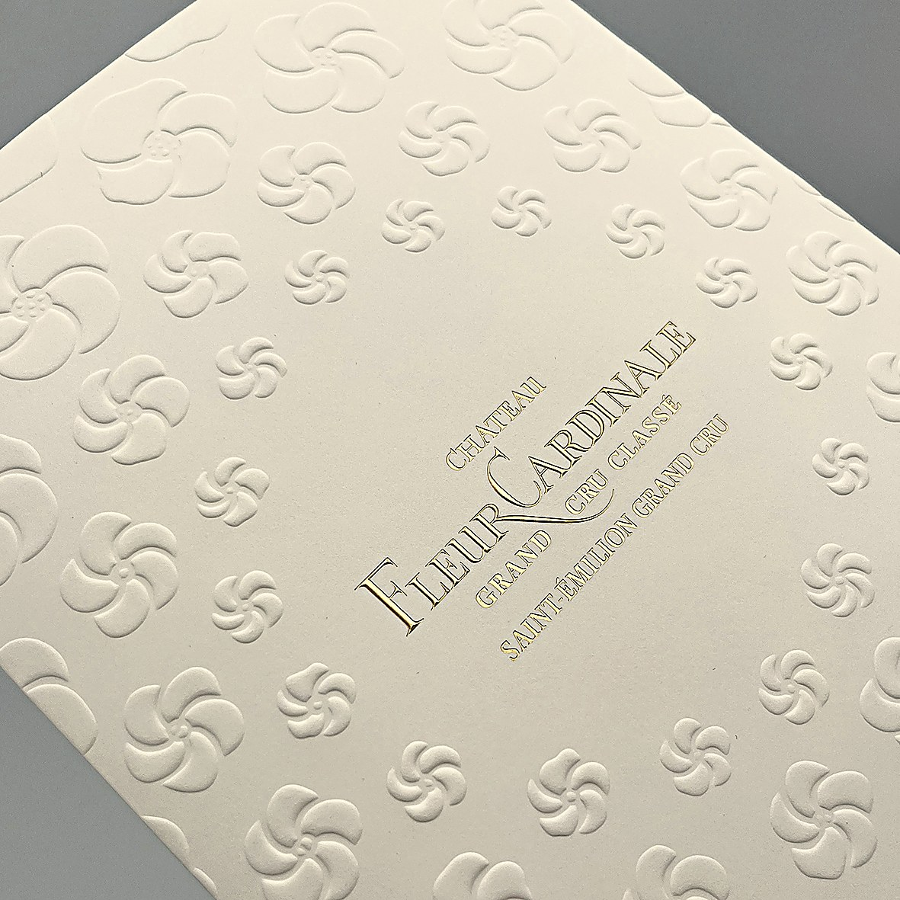

Accueil / Savoir-faire / Gaufrage
Gaufrage
Le motif sort du papier : on le voit à la lumière, on le reconnaît au toucher. Un relief net, sans encre ni film, ou associé à votre dorure et à votre impression.

Le relief se révèle à la lumière
Déplacez la lumière sur ce décor gaufré à sec : c'est ce que verra la personne qui tient votre emballage en main, quand elle le tourne vers la fenêtre.
Simulation indicative : la profondeur réelle dépend du papier et de son grammage.
Déplacez la sourisFaites glisser le doigt sur le décor pour faire bouger la lumière
Ce que nous réalisons
Du relief discret qui se découvre en main au décor travaillé qui attire l'œil en rayon, pour les imprimeurs du luxe, de la cosmétique, des vins et spiritueux et de la papeterie.

Gaufrage à sec
Le relief seul, ton sur ton : une élégance sobre qui se révèle à la lumière rasante.

Multi-niveaux
Plusieurs hauteurs de relief dans le même motif : le décor prend de la profondeur et du modelé.

Gaufrage et dorure
Le relief porte la dorure : le motif se soulève et accroche la lumière sur chacune de ses courbes.
 Parfumerie
Parfumerie
Vins & Spiritueux Vins & Spiritueux
Vins & Spiritueux
Cosmétique
Vins & Spiritueux Cosmétique
Cosmétique
En pratique
- Format maximum
- 75 × 105 cm
- Supports
- Papier et carton compact, de 0,1 à 1,8 mm
- Gaufrages
- À sec, multi-niveaux, gaufrage et dorure
- Repérage
- Calé sur votre impression ou sur votre dorure
- Délai moyen
- 1 à 2 semaines, transport compris
- Essais
- Possibles pour les dossiers techniques
Questions fréquentes
Quel papier donne le plus beau relief ?
Les papiers épais et souples, non couchés, prennent les reliefs les plus profonds. Un papier couché ou pelliculé accepte un relief plus doux : envoyez-nous un échantillon, nous vous dirons ce qu'il permet.
Le relief se voit-il au verso ?
Oui, un gaufrage marque le verso en creux. Si le verso reste visible, nous en parlons avant : rabat, contrecollage ou relief adapté.
Peut-on gaufrer et dorer en un seul passage ?
Oui, c'est la dorure galbée. Pour un décor gaufré autour d'une dorure, les deux finitions sont réalisées l'une après l'autre, calées entre elles.
Un projet de gaufrage ?
Se combine avec la dorure à chaud, la découpe, le pelliculage et le vernis sélectif, dans le même atelier.